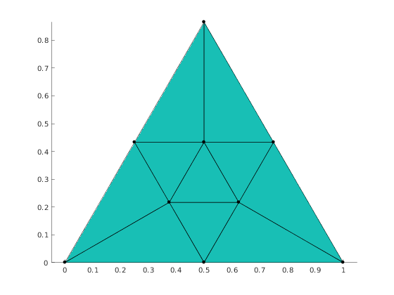
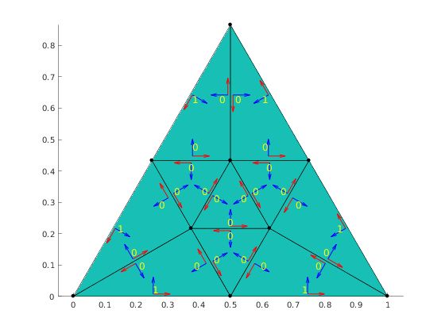

Illustrate how to use function mp_face_edge_data
Contents
Get one of the predefined meshes.
mesh = mp.MeshFactory.produce('tritri');
Show mesh
viewer = mp.Viewer(); viewer.show(mesh);
Edge data in elements
Caclulate edge flags, edge tangent vector and edge normal vector for each element
[elemEdgeTags, elemTan, elemNor] = mp_face_edge_data(mesh);
Visualization of edge data
Get face and edge centers
faceCenters = mesh.faceCenters(); edgeCenters = mesh.edgeCenters();
Get face to edge adjacencies
f2e = mesh.getAdjacency(mp.Topo.Face, mp.Topo.Edge);
Count number of labels to print
nlabels = 0; for i=1:f2e.length nlabels = nlabels + length(f2e.at(i)); end
Preallocate arrays of label coordinates and labels
labelCoords = zeros(nlabels, 3); labels = zeros(nlabels, 1);
Preallocate arrays for tangent vectors, normal vecotrs, and anchor points
tan = zeros(nlabels, 2); nor = zeros(nlabels, 2); quiverPoint = zeros(nlabels, 3); % Fill the the arrays k = 0; for i = 1:f2e.length edges = f2e.at(i); fc = faceCenters(i, :); for j = 1:length(edges) k = k+1; labels(k) = elemEdgeTags(i, j); ec = edgeCenters(edges(j), :); labelCoords(k, :) = ec + (fc-ec)*0.3; quiverPoint(k, :) = ec+(fc-ec)*0.1; tan(k, :) = elemTan(i, j, :); nor(k, :) = -elemNor(i, j, :); end end
Plot arrows for tangent and normal vectors
hold on; quiver(quiverPoint(:,1), quiverPoint(:,2), tan(:,1), tan(:,2), 0.3, 'LineWidth', 1, 'Color', 'red'); quiver(quiverPoint(:,1), quiverPoint(:,2), nor(:,1), nor(:,2), 0.3, 'LineWidth', 1, 'Color', 'blue');

Plot labels indicating if elemen edge is boundary edge
mp_plot_labels(labelCoords, struct('labels', labels, 'Color', 'yellow', 'FontSize', 12));
mp_manage_demos('report', 'mp_face_edge_data', true);